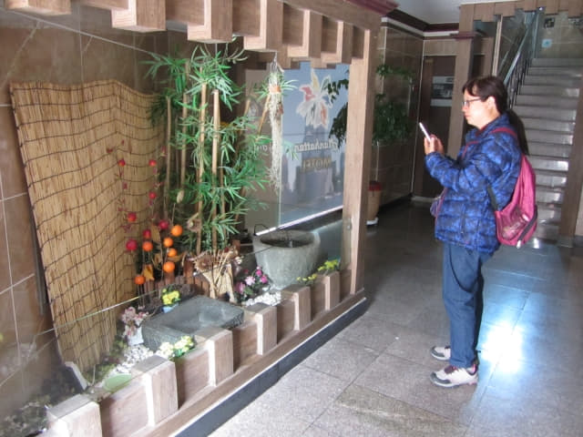
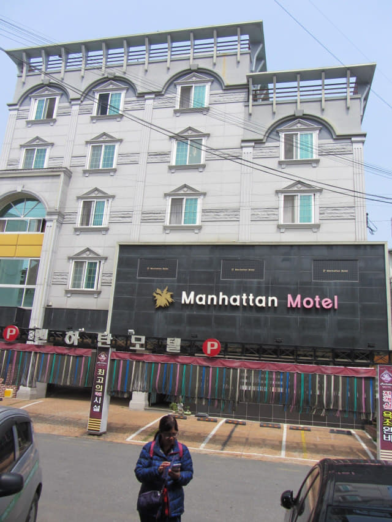
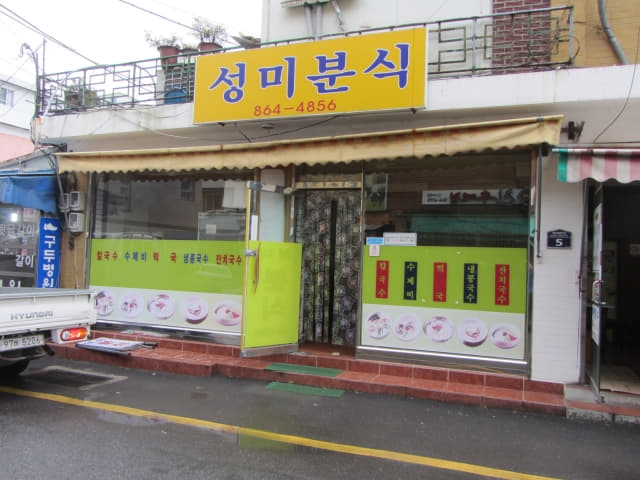
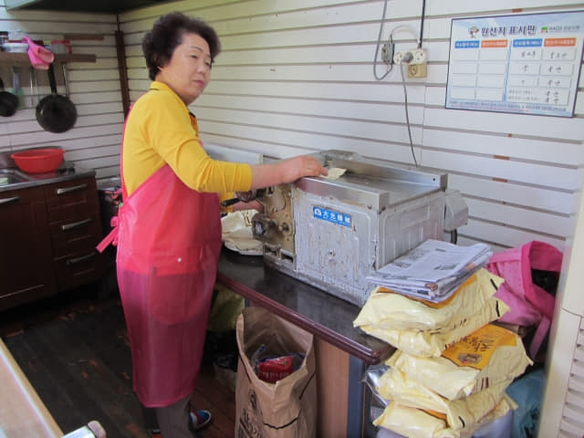
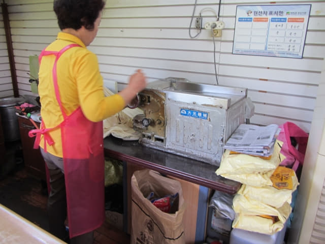
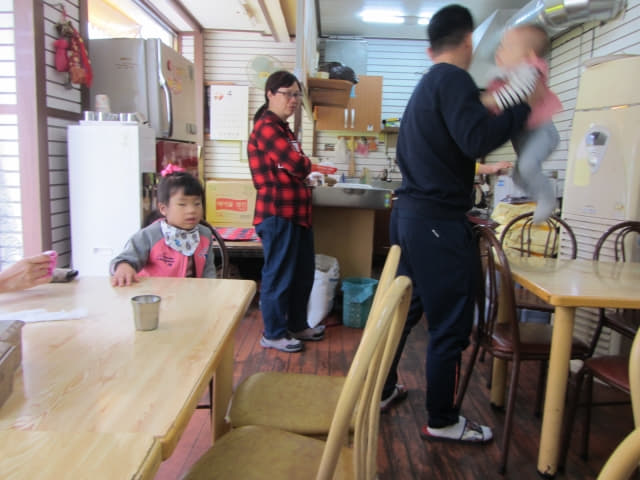
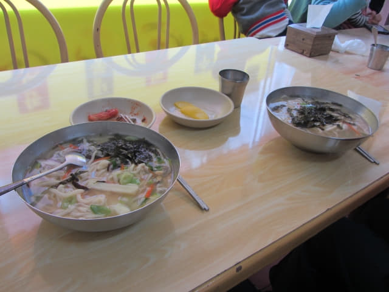

原本打算在南海公用客運站附近住宿, 方便每天出入, 因沿途所有旅館的服務台沒有職員, 最後竟然下榻離汽車站最遠的 남해 맨하탄 (Manhattan Motel), 幸好房間十分寬敞、舒適和清潔, 每晚只是 5,000 韓元, 簡直超值啦!
將行李放置在5樓房間後, 已經是早上十一時四十五分, 按計劃, 今天是遊覽南海雪川面北面 — 文義里、露梁里沿海一帶的景點, 主要是露梁-枉地櫻花路 (왕지-노량 벚꽃길)和南海大橋(남해대교), 因需要走很多路, 時間可能有點緊迫。
南海雪川面北面文義里、露梁里沿海行程安排如下:
首先從南海公用客運站乘巴士往旺池 (왕지), 接著是步行路線:
旺池巴士站 → 露梁-枉地櫻花路 → 露梁海邊 → 龜甲船 → 南海大橋 →
露梁海峽對岸 (河東郡) → 南海大橋 → 露梁海峽 (南海) → 巴士站傍晚從南海大橋附近巴士站乘巴士返回南海公用客運站。其中從南海郡步行沿南海大橋穿越露梁海峽到達對岸的河東郡是今天最精彩的行程。
雪川面 (설천면 Seolcheon-myeon) 地圖:
文義里 (문의리 Munui-ri) 地圖:
露梁里 (노량리 Noryang-ri) 地圖:
匆匆收拾一些隨身攜帶的用品及旅遊資料, 便走出房間, 正式開始南海的行程。
南海 Manhattan Motel 一樓接待處。

離開南海 Manhattan Motel, 循原路走往南海公用客運站, 因差不多已經是中午, 我們先在沿途經過的餐館吃完午餐, 才乘巴士往旺池 (왕지)。

南海第96小街「성미분식」餐館 滋味拉麵午餐
沿途有幾間海鮮餐廳, 太貴! 遠遠超出我們的預算。來到第96小街, 經過一間面積很細的餐館, 店舖名稱是「성미분식」, 門外有幾張湯麵的圖片, 一看便知是麵檔, 價錢肯定不會貴啦! 便立即決定在這裡午餐。

「성미분식」餐館地圖。
按圖片隨便叫了兩碗湯麵, 便坐下來。
當老闆娘開始準備我們的午餐時, 才知道麵條不是買回來的! 是由老闆娘親手製作的, 所以需要等一段時間, 但肯定爽口彈牙啦!


過了一會, 一個四人家庭也進來午餐, 和我們坐在同一張桌子。兩個小孩子非常頑皮、完全不聽話的, 常常故意打翻水杯和桌上所有東西, 弄得我們也要暫避風頭, 以免殃及池魚, 結果弄得父親疲於奔命。

等了十多分鐘, 先送來 配菜。

老闆娘精心製作的拉麵也送來了。主角是拉麵, 淡淡的湯底, 簡單的配菜, 讓吃的時候感受到軟滑、清甜的麵質, 簡直是將麵發揮到淋漓盡致的境界, 心裡已盤算離開南海前一定要再品嚐一次。結帳兩人只是8,000韓元, 大喊超值!


{kind=link}
{kind=link}
{kind=link}
{kind=link}